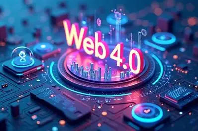

Web 4.0 is the fourth and most advanced generation of the World Wide
Web, also referred to as the Symbiotic Web or the Intelligent Web.
It represents a future state of the web where the interaction between
humans and machines becomes deeply integrated, intuitive and
symbiotic. Web 4.0 is built on the foundations of all previous
web generations and takes artificial intelligence, connectivity
and automation to an entirely new level.

Key Characteristics of Web 4.0
Web 4.0 is defined by several advanced characteristics that
distinguish it from earlier generations:
Symbiotic interaction — humans and machines
work together in a deeply connected and mutually beneficial way,
with machines anticipating and responding to human needs
intelligently.
Ultra intelligence — artificial intelligence
is deeply embedded into every aspect of the web, enabling
systems to think, learn and make decisions autonomously.
Internet of Things (IoT) — physical devices
such as appliances, vehicles and wearables are connected to
the web and communicate with each other and with users
automatically.
Ubiquitous connectivity — the web is accessible
everywhere at all times through any device, seamlessly integrated
into everyday life.
Immersive experiences — Web 4.0 enables fully
immersive virtual and augmented reality experiences that blur
the line between the physical and digital worlds.
Web 4.0 and Artificial Intelligence
Artificial intelligence is at the core of Web 4.0. Unlike Web 3.0
where AI was used to make data more meaningful, in Web 4.0 AI
actively participates in interactions. Web 4.0 systems can
understand context, predict user behaviour, automate complex
tasks and deliver highly personalised experiences without
requiring explicit instructions from the user.
The Evolution of the Web
The four generations of the web represent a remarkable journey
in the history of technology:
Web 1.0 — Read only. Static pages, one way information flow.
Web 2.0 — Read and write. User generated content and participation.
Web 3.0 — Read, write and execute. Semantic, decentralized and intelligent.
Web 4.0 — Symbiotic. Ultra intelligent interaction between humans and machines.